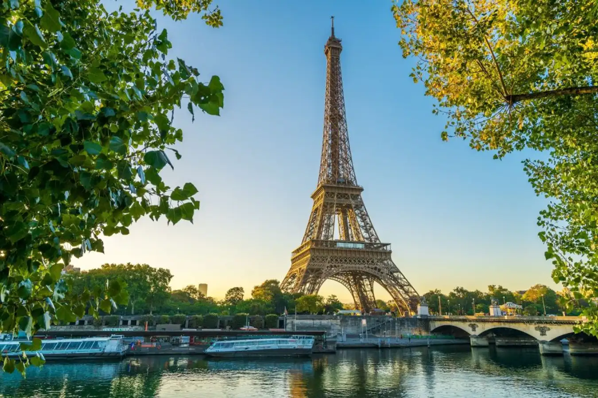

Công trình tháp Eiffel được xây dựng từ năm 1889 nhân ngày kỷ niệm 100 năm cách mạng Pháp. Thời gian đầu tiên, tháp có tên gọi là tháp 300 mét. Tuy nhiên theo số đo thực tế tháp có chiều cao nhỉnh hơn một chút nếu tính cả cột ăng ten.
Tính từ năm 1889, sau khi xây dựng xong tháp Eiffel được biết đến là một công trình cao nhất trên thế giới. Đến năm 1930 sau khi tòa Chrysler được xây dựng tại New York đã có chiều cao vượt mặt so với tháp.
Tháp Eiffel được xây dựng vào thời gian diễn ra triển lãm thế giới tại Pháp, khi ấy hình ảnh tháp đã trở thành trung tâm của buổi triển lãm trên thế giới. Qua đó có thể thể hiện được vẻ đẹp nghệ thuật xây dựng đỉnh cao của Pháp.
Tháp Eiffel được xây dựng vào thời gian diễn ra triển lãm thế giới tại Pháp, khi ấy hình ảnh tháp đã trở thành trung tâm của buổi triển lãm trên thế giới. Qua đó có thể thể hiện được vẻ đẹp nghệ thuật xây dựng đỉnh cao của Pháp.
Kể từ đó đến nay, tháp Eiffel luôn thu hút được đông đảo du khách trong nước và nước ngoài đến thăm quan. Công trình được xem là một kiến kiến trúc nổi tiếng của Gustave Eiffel. Do đó tên của ông đã được dùng để đặt tên cho công trình vĩ đại này.
Trải qua cuộc triển lãm tháp Eiffel nằm ở thủ đô Paris. Tòa tháp được xây dựng dọc theo bờ sông Seine, năm trong công viên Champ de Mars park. Nơi đây thu hút hơn 7 triệu du khách thăm quan hàng năm. Tòa tháp sở hữu 2 nhà hàng trong đó có Le Jules Verne nổi tiếng được nằm tại tầng hai và tầng ba của toà tháp.